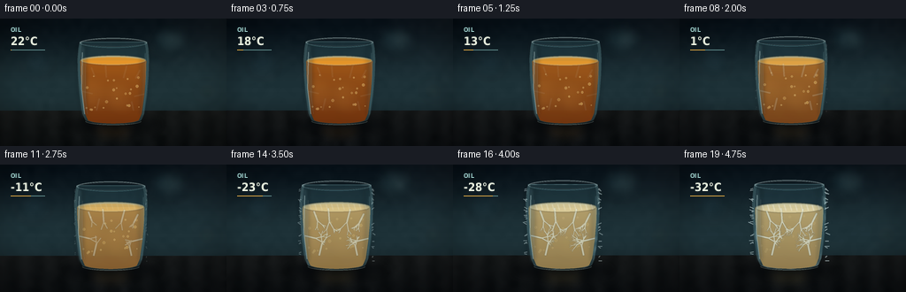
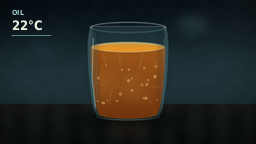
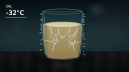
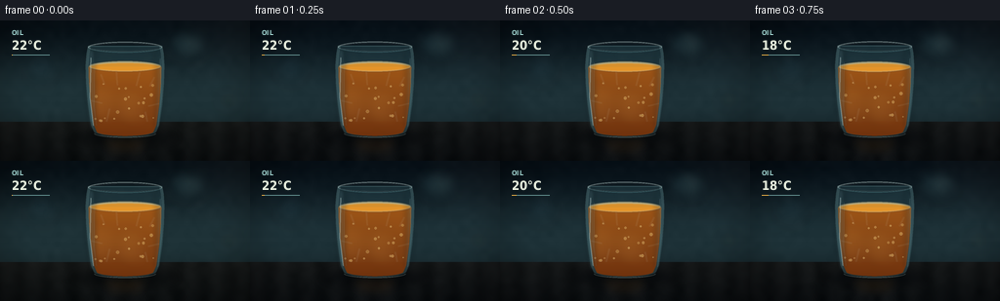

CODING AGENTS AS PIXEL WORLD MODELS
traex/DeepSeek-V4.1-Flash · phygen_094
点击播放 · 原生 RGB 像素
逐轮保存的候选
回放视频、检查图与代码变化。
每份候选均可单独播放。实际图片检查记录在下方工具轨迹中。
候选 01播放与检查图
点击播放 · 原生 RGB 像素

展开代码变化
--- 上一保存版本
+++ 本次保存版本
@@ -0,0 +1,472 @@
+from pathlib import Path
+import math
+
+import numpy as np
+from PIL import Image, ImageDraw, ImageFilter, ImageFont
+
+from artifact_io import save
+
+
+WIDTH = 256
+HEIGHT = 144
+FRAMES = 20
+FPS = 4.0
+SS = 4
+W = WIDTH * SS
+H = HEIGHT * SS
+RNG = np.random.default_rng(90417)
+
+
+def smoothstep(value):
+ value = np.clip(value, 0.0, 1.0)
+ return value * value * (3.0 - 2.0 * value)
+
+
+def scaled_points(points):
+ return [(int(x * SS), int(y * SS)) for x, y in points]
+
+
+def vertical_gradient(top, bottom, y0=0, y1=HEIGHT):
+ rows = np.linspace(0.0, 1.0, H, dtype=np.float32)[:, None]
+ colors = np.array(top, dtype=np.float32) * (1.0 - rows) + np.array(bottom, dtype=np.float32) * rows
+ return np.repeat(colors[:, None, :], W, axis=1)
+
+
+def make_background():
+ yy = np.linspace(0.0, 1.0, H, dtype=np.float32)[:, None, None]
+ xx = np.linspace(0.0, 1.0, W, dtype=np.float32)[None, :, None]
+ top = np.array([8, 17, 23], dtype=np.float32)
+ middle = np.array([31, 51, 56], dtype=np.float32)
+ low = np.array([17, 26, 28], dtype=np.float32)
+ upper = top * (1.0 - smoothstep(yy / 0.55)) + middle * smoothstep(yy / 0.55)
+ bg = upper * (1.0 - smoothstep((yy - 0.58) / 0.42)) + low * smoothstep((yy - 0.58) / 0.42)
+ bg = np.repeat(bg, W, axis=1)
+
+ # Soft out-of-focus highlights establish a cold, shallow studio background.
+ glow = Image.new("RGBA", (W, H), (0, 0, 0, 0))
+ draw = ImageDraw.Draw(glow)
+ draw.ellipse((171 * SS, 9 * SS, 213 * SS, 39 * SS), fill=(63, 109, 116, 54))
+ draw.ellipse((190 * SS, 17 * SS, 202 * SS, 31 * SS), fill=(163, 191, 178, 55))
+ draw.ellipse((27 * SS, 35 * SS, 58 * SS, 65 * SS), fill=(53, 92, 108, 30))
+ draw.ellipse((222 * SS, 73 * SS, 246 * SS, 91 * SS), fill=(91, 69, 39, 23))
+ glow = glow.filter(ImageFilter.GaussianBlur(7 * SS))
+ bg = Image.alpha_composite(Image.fromarray(bg.astype(np.uint8)).convert("RGBA"), glow)
+
+ # Slate work surface, with a restrained suggestion of brushed grain.
+ table = vertical_gradient((45, 45, 40), (13, 16, 17))[104 * SS :, :, :]
+ grain = (
+ np.sin(np.linspace(0, 19 * math.pi, W, dtype=np.float32))[None, :, None] * 3.0
+ + np.sin(np.linspace(0, 5 * math.pi, W, dtype=np.float32))[None, :, None] * 1.5
+ )
+ table = np.clip(table.astype(np.float32) + grain, 0, 255).astype(np.uint8)
+ surface = Image.fromarray(table).convert("RGBA")
+ mask = Image.new("L", (W, H - 104 * SS), 255)
+ surface.putalpha(mask.filter(ImageFilter.GaussianBlur(0.7 * SS)))
+ bg.alpha_composite(surface, (0, 104 * SS))
+
+ # A low-frequency grain field prevents the large color fields from looking synthetic.
+ coarse = RNG.normal(0, 8, (24, 42)).astype(np.float32)
+ noise = Image.fromarray(np.clip(coarse + 128, 0, 255).astype(np.uint8)).resize(
+ (W, H), Image.Resampling.BICUBIC
+ )
+ noise = np.asarray(noise.filter(ImageFilter.GaussianBlur(1.2 * SS)), dtype=np.float32)
+ bg_array = np.asarray(bg.convert("RGB"), dtype=np.float32)
+ bg_array += (noise[:, :, None] - 128.0) * 0.12
+
+ # Gentle vignette and a cold rim of light from the upper right.
+ xn = np.linspace(-1.0, 1.0, W, dtype=np.float32)[None, :]
+ yn = np.linspace(-1.0, 1.0, H, dtype=np.float32)[:, None]
+ vignette = np.clip(1.18 - 0.31 * (xn * xn + 0.72 * yn * yn), 0.55, 1.0)
+ rim = np.exp(-((xn - 0.88) ** 2 / 0.16 + (yn + 0.85) ** 2 / 0.35)) * 7.0
+ bg_array = bg_array * vignette[:, :, None] + rim[:, :, None]
+ return Image.fromarray(np.clip(bg_array, 0, 255).astype(np.uint8)).convert("RGBA")
+
+
+def body_polygon(inset=0.0):
+ left = [
+ (90 + inset, 26 + inset * 0.35),
+ (88.5 + inset, 34),
+ (87.7 + inset, 46),
+ (88.2 + inset, 64),
+ (90 + inset, 86),
+ (93 + inset, 107),
+ (96 + inset, 114),
+ ]
+ right = [
+ (166 - inset, 26 + inset * 0.35),
+ (167.5 - inset, 34),
+ (168.3 - inset, 46),
+ (167.8 - inset, 64),
+ (166 - inset, 86),
+ (163 - inset, 107),
+ (160 - inset, 114),
+ ]
+ bottom = []
+ for angle in np.linspace(0.0, math.pi, 18):
+ bottom.append((128 + (32 - inset) * math.cos(angle), 114 + (5.2 - inset * 0.2) * math.sin(angle)))
+ return left + bottom + list(reversed(right))
+
+
+def mask_from_polygon(points):
+ mask = Image.new("L", (W, H), 0)
+ ImageDraw.Draw(mask).polygon(scaled_points(points), fill=255)
+ return mask
+
+
+def gradient_layer(mask, top, bottom, alpha=255):
+ arr = vertical_gradient(top, bottom, 24, 121)
+ image = Image.fromarray(np.clip(arr, 0, 255).astype(np.uint8)).convert("RGBA")
+ a = np.asarray(mask, dtype=np.float32) * (alpha / 255.0)
+ image.putalpha(Image.fromarray(np.clip(a, 0, 255).astype(np.uint8)))
+ return image
+
+
+def add_ellipse_outline(draw, box, color, width):
+ draw.ellipse(tuple(v * SS for v in box), outline=color, width=max(1, int(width * SS)))
+
+
+def build_crystal_branches():
+ local_rng = np.random.default_rng(4421)
+ segments = []
+ seeds = [
+ (103, 55, math.radians(69)),
+ (119, 52, math.radians(86)),
+ (143, 53, math.radians(104)),
+ (158, 58, math.radians(116)),
+ (93, 82, math.radians(14)),
+ (164, 85, math.radians(166)),
+ (109, 104, math.radians(-76)),
+ (151, 104, math.radians(-102)),
+ ]
+
+ def branch(x, y, angle, length, depth, max_depth):
+ nx = x + math.cos(angle) * length
+ ny = y + math.sin(angle) * length
+ segments.append((x, y, nx, ny, depth))
+ if depth >= max_depth:
+ return
+ for sign in (-1, 1):
+ spread = local_rng.uniform(0.30, 0.54)
+ child_angle = angle + sign * spread + local_rng.uniform(-0.08, 0.08)
+ branch(nx, ny, child_angle, length * local_rng.uniform(0.54, 0.73), depth + 1, max_depth)
+ if depth < max_depth - 1 and local_rng.random() < 0.34:
+ branch(nx, ny, angle + local_rng.uniform(-0.14, 0.14), length * 0.5, depth + 1, max_depth)
+
+ for sx, sy, angle in seeds:
+ branch(sx, sy, angle, local_rng.uniform(10.5, 15.0), 0, 4)
+ return segments
+
+
+CRYSTAL_SEGMENTS = build_crystal_branches()
+
+
+def draw_oil(base, t, oil_mask):
+ cloud = float(smoothstep((t - 0.16) / 0.69))
+ solid = float(smoothstep((t - 0.34) / 0.63))
+ surface_y = 47.0 + 5.0 * t
+
+ amber_top = np.array([217, 117, 20], dtype=np.float32)
+ amber_bottom = np.array([111, 42, 8], dtype=np.float32)
+ cloudy_top = np.array([212, 178, 101], dtype=np.float32)
+ cloudy_bottom = np.array([132, 92, 39], dtype=np.float32)
+ frozen_top = np.array([226, 209, 158], dtype=np.float32)
+ frozen_bottom = np.array([151, 132, 88], dtype=np.float32)
+
+ top = amber_top * (1 - cloud) + cloudy_top * cloud
+ bottom = amber_bottom * (1 - cloud) + cloudy_bottom * cloud
+ top = top * (1 - solid * 0.64) + frozen_top * solid * 0.64
+ bottom = bottom * (1 - solid * 0.60) + frozen_bottom * solid * 0.60
+ oil = gradient_layer(oil_mask, top, bottom, int(216 + 24 * cloud))
+ base.alpha_composite(oil)
+
+ # Broad caustics and a luminous meniscus keep the early liquid volume readable.
+ caustic = Image.new("RGBA", (W, H), (0, 0, 0, 0))
+ cd = ImageDraw.Draw(caustic)
+ for offset, alpha in [(-20, 22), (-7, 17), (11, 25), (24, 14)]:
+ cd.ellipse(
+ ((111 + offset) * SS, (67 + offset * 0.15) * SS, (127 + offset) * SS, (107 + offset * 0.1) * SS),
+ fill=(255, 204, 103, int(alpha * (1.0 - 0.68 * solid))),
+ )
+ caustic = caustic.filter(ImageFilter.GaussianBlur(5.5 * SS))
+ caustic.putalpha(Image.composite(caustic.getchannel("A"), Image.new("L", (W, H), 0), oil_mask))
+ base.alpha_composite(caustic)
+
+ # The elliptical upper surface sits inside the glass with a bright front edge.
+ surf = Image.new("RGBA", (W, H), (0, 0, 0, 0))
+ sd = ImageDraw.Draw(surf)
+ box = (90.8 * SS, (surface_y - 5.5) * SS, 165.2 * SS, (surface_y + 5.5) * SS)
+ surface_color = (
+ int(237 - 18 * cloud),
+ int(156 + 38 * cloud),
+ int(43 + 88 * cloud),
+ 230,
+ )
+ sd.ellipse(box, fill=surface_color)
+ sd.ellipse(box, outline=(255, 229, 156, 145), width=1 * SS)
+ sd.arc(
+ (92.0 * SS, (surface_y - 4.5) * SS, 164.0 * SS, (surface_y + 5.0) * SS),
+ 198,
+ 342,
+ fill=(255, 240, 188, int(165 - 35 * solid)),
+ width=1 * SS,
+ )
+ surf = surf.filter(ImageFilter.GaussianBlur(0.45 * SS))
+ base.alpha_composite(surf)
+
+ # Small suspended bubbles drift upward while the oil is still fluid.
+ bubbles = Image.new("RGBA", (W, H), (0, 0, 0, 0))
+ bd = ImageDraw.Draw(bubbles)
+ bubble_rng = np.random.default_rng(183)
+ for _ in range(22):
+ bx = float(bubble_rng.uniform(96, 160))
+ by0 = float(bubble_rng.uniform(62, 104))
+ by = by0 - t * bubble_rng.uniform(2.0, 8.0)
+ radius = float(bubble_rng.uniform(0.55, 1.65))
+ a = int((58 + bubble_rng.uniform(0, 45)) * (1.0 - 0.78 * solid))
+ bd.ellipse(
+ ((bx - radius) * SS, (by - radius) * SS, (bx + radius) * SS, (by + radius) * SS),
+ fill=(255, 218, 123, a),
+ outline=(255, 241, 197, min(220, a + 35)),
+ width=1,
+ )
+ bubbles.putalpha(Image.composite(bubbles.getchannel("A"), Image.new("L", (W, H), 0), oil_mask))
+ base.alpha_composite(bubbles)
+
+ # Dendritic crystals grow from the surface, wall, and base into the oil.
+ crystals = Image.new("RGBA", (W, H), (0, 0, 0, 0))
+ crystal_draw = ImageDraw.Draw(crystals)
+ reveal = float(smoothstep((t - 0.30) / 0.67))
+ max_depth = 0.2 + 3.8 * reveal
+ for x0, y0, x1, y1, depth in CRYSTAL_SEGMENTS:
+ visibility = np.clip((max_depth - depth) / 0.8, 0.0, 1.0)
+ if visibility <= 0:
+ continue
+ alpha = int((72 + 92 * reveal) * visibility)
+ width = max(1, int((0.65 + 0.45 * (3 - depth)) * SS))
+ crystal_draw.line(
+ [(x0 * SS, y0 * SS), (x1 * SS, y1 * SS)],
+ fill=(229, 247, 237, alpha),
+ width=width,
+ )
+ crystal_draw.line(
+ [(x0 * SS, (y0 - 0.45) * SS), (x1 * SS, (y1 - 0.45) * SS)],
+ fill=(255, 255, 248, int(alpha * 0.54)),
+ width=max(1, width // 3),
+ )
+ crystals = crystals.filter(ImageFilter.GaussianBlur(0.22 * SS))
+ crystals.putalpha(Image.composite(crystals.getchannel("A"), Image.new("L", (W, H), 0), oil_mask))
+ base.alpha_composite(crystals)
+
+ # A milky frozen cap appears late in the sequence.
+ if t > 0.55:
+ cap_alpha = int(125 * smoothstep((t - 0.55) / 0.42))
+ cap = Image.new("RGBA", (W, H), (0, 0, 0, 0))
+ capd = ImageDraw.Draw(cap)
+ capd.ellipse(
+ (92 * SS, (surface_y - 5.0) * SS, 164 * SS, (surface_y + 5.5) * SS),
+ fill=(229, 220, 181, cap_alpha),
+ )
+ for i in range(11):
+ cx = 98 + i * 6.1
+ capd.line(
+ [(cx * SS, (surface_y - 3.4) * SS), ((cx + 2.0) * SS, (surface_y + 3.2) * SS)],
+ fill=(250, 249, 230, cap_alpha + 28),
+ width=1 * SS,
+ )
+ cap = cap.filter(ImageFilter.GaussianBlur(0.35 * SS))
+ base.alpha_composite(cap)
+
+
+def draw_glass(base, t, outer_mask, inner_mask, wall_mask):
+ # Back glass and wall thickness.
+ tint = gradient_layer(wall_mask, (127, 177, 181), (66, 105, 111), 94)
+ base.alpha_composite(tint)
+
+ # Inner side shadows give the cylinder volume without obscuring the oil.
+ side_shadow = Image.new("RGBA", (W, H), (0, 0, 0, 0))
+ sd = ImageDraw.Draw(side_shadow)
+ sd.polygon(
+ scaled_points([(89, 28), (98, 31), (98, 108), (93, 111), (88, 88), (87, 47)]),
+ fill=(19, 39, 45, 58),
+ )
+ sd.polygon(
+ scaled_points([(167, 28), (158, 31), (158, 108), (163, 111), (168, 88), (169, 47)]),
+ fill=(19, 39, 45, 42),
+ )
+ side_shadow = side_shadow.filter(ImageFilter.GaussianBlur(2.2 * SS))
+ base.alpha_composite(side_shadow)
+
+ # Fine highlights trace the cylindrical wall and both rims.
+ glass_fx = Image.new("RGBA", (W, H), (0, 0, 0, 0))
+ gd = ImageDraw.Draw(glass_fx)
+ gd.line(
+ [(93.0 * SS, 38 * SS), (92.2 * SS, 79 * SS), (95.5 * SS, 108 * SS)],
+ fill=(223, 248, 245, 112),
+ width=int(1.35 * SS),
+ )
+ gd.line(
+ [(96.8 * SS, 43 * SS), (96.3 * SS, 88 * SS), (98.8 * SS, 108 * SS)],
+ fill=(255, 255, 250, 40),
+ width=int(0.8 * SS),
+ )
+ gd.line(
+ [(164.2 * SS, 39 * SS), (165.2 * SS, 80 * SS), (161.5 * SS, 109 * SS)],
+ fill=(170, 220, 224, 76),
+ width=int(0.8 * SS),
+ )
+ add_ellipse_outline(gd, (90, 21.8, 166, 33.0), (218, 245, 241, 154), 1.2)
+ add_ellipse_outline(gd, (91.2, 23.3, 164.8, 31.6), (255, 255, 250, 70), 0.65)
+ gd.arc(
+ (90 * SS, 21.8 * SS, 166 * SS, 33 * SS),
+ 12,
+ 168,
+ fill=(111, 171, 178, 116),
+ width=1 * SS,
+ )
+ gd.arc(
+ (96 * SS, 111.2 * SS, 160 * SS, 120.4 * SS),
+ 6,
+ 174,
+ fill=(194, 234, 231, 112),
+ width=1 * SS,
+ )
+ glass_fx = glass_fx.filter(ImageFilter.GaussianBlur(0.28 * SS))
+ base.alpha_composite(glass_fx)
+
+ # Frost grows from the rim, wall, and base using a fixed noise field.
+ frost_amount = float(smoothstep((t - 0.42) / 0.57))
+ if frost_amount > 0:
+ frost_field = Image.fromarray(np.clip(RNG.normal(128, 38, (26, 46)), 0, 255).astype(np.uint8))
+ frost_field = frost_field.resize((W, H), Image.Resampling.BICUBIC).filter(
+ ImageFilter.GaussianBlur(1.4 * SS)
+ )
+ fn = np.asarray(frost_field, dtype=np.float32)
+ wall = np.asarray(wall_mask, dtype=np.float32) / 255.0
+ yy = np.arange(H, dtype=np.float32)[:, None] / H
+ edge_weight = 0.60 + 0.40 * (np.abs(yy - 0.56) / 0.56)
+ threshold = 128.0 + 30.0 * (1.0 - frost_amount)
+ frost_alpha = np.clip((fn - threshold) * 1.7, 0, 130) * wall * edge_weight * frost_amount
+ frost = Image.new("RGBA", (W, H), (211, 241, 237, 0))
+ frost.putalpha(Image.fromarray(frost_alpha.astype(np.uint8)))
+ base.alpha_composite(frost)
+
+ spicules = Image.new("RGBA", (W, H), (0, 0, 0, 0))
+ sp = ImageDraw.Draw(spicules)
+ frost_rng = np.random.default_rng(9982)
+ for i in range(42):
+ side = -1 if i % 2 == 0 else 1
+ yy0 = frost_rng.uniform(30, 111)
+ xx0 = (89.2 if side < 0 else 167.0) + side * frost_rng.uniform(-0.4, 1.0)
+ length = frost_rng.uniform(1.2, 5.2) * frost_amount
+ xx1 = xx0 + side * length
+ yy1 = yy0 + frost_rng.uniform(-2.2, 2.2)
+ alpha = int((65 + 70 * frost_amount) * (0.3 + 0.7 * frost_amount))
+ sp.line([(xx0 * SS, yy0 * SS), (xx1 * SS, yy1 * SS)], fill=(235, 251, 247, alpha), width=1 * SS)
+ base.alpha_composite(spicules)
+
+ # Front wall veil makes the glass legible over the dark background.
+ front = Image.new("RGBA", (W, H), (0, 0, 0, 0))
+ fd = ImageDraw.Draw(front)
+ fd.polygon(
+ scaled_points(
+ [
+ (90, 29),
+ (96, 31),
+ (97, 110),
+ (100, 114),
+ (92, 111),
+ (88, 76),
+ (88, 43),
+ ]
+ ),
+ fill=(164, 215, 216, 22),
+ )
+ fd.polygon(
+ scaled_points([(164, 31), (168, 44), (167, 76), (162, 111), (158, 113), (160, 90), (161, 50)]),
+ fill=(126, 185, 192, 16),
+ )
+ front = front.filter(ImageFilter.GaussianBlur(1.4 * SS))
+ base.alpha_composite(front)
+
+
+def draw_shadow_and_reflection(base, t):
+ shadow = Image.new("RGBA", (W, H), (0, 0, 0, 0))
+ sd = ImageDraw.Draw(shadow)
+ sd.ellipse((73 * SS, 112 * SS, 183 * SS, 128 * SS), fill=(3, 6, 8, 128))
+ sd.ellipse((94 * SS, 114 * SS, 167 * SS, 124 * SS), fill=(4, 7, 8, 160))
+ shadow = shadow.filter(ImageFilter.GaussianBlur(4.5 * SS))
+ base.alpha_composite(shadow)
+
+ reflection = Image.new("RGBA", (W, H), (0, 0, 0, 0))
+ rd = ImageDraw.Draw(reflection)
+ warm = (139 + int(38 * t), 79 + int(74 * t), 20 + int(60 * t), 30)
+ rd.polygon(scaled_points([(102, 119), (153, 119), (145, 137), (111, 137)]), fill=warm)
+ reflection = reflection.filter(ImageFilter.GaussianBlur(5.5 * SS))
+ base.alpha_composite(reflection)
+
+
+def overlay_readout(frame, t):
+ image = frame.convert("RGBA")
+ draw = ImageDraw.Draw(image)
+ font_small = ImageFont.truetype("/usr/share/fonts/truetype/dejavu/DejaVuSansCondensed-Bold.ttf", 7)
+ font_temp = ImageFont.truetype("/usr/share/fonts/truetype/dejavu/DejaVuSansCondensed-Bold.ttf", 13)
+ temperature = int(round(22 - 54 * smoothstep(t)))
+ draw.text((12, 8), "OIL", font=font_small, fill=(157, 207, 203, 205), stroke_width=0)
+ draw.text((12, 17), f"{temperature:d}\u00b0C", font=font_temp, fill=(235, 241, 225, 232), stroke_width=0)
+ draw.line([(12, 35), (50, 35)], fill=(91, 132, 132, 120), width=1)
+ draw.line([(12, 35), (12 + 38 * t, 35)], fill=(208, 158, 66, 220), width=1)
+ return image.convert("RGB")
+
+
+def render_frame(index):
+ t = index / (FRAMES - 1)
+ background = make_background()
+ draw_shadow_and_reflection(background, t)
+
+ outer_mask = mask_from_polygon(body_polygon(0.0))
+ inner_mask = mask_from_polygon(body_polygon(3.0))
+ wall_mask = Image.fromarray(
+ np.clip(np.asarray(outer_mask, dtype=np.int16) - np.asarray(inner_mask, dtype=np.int16), 0, 255).astype(
+ np.uint8
+ )
+ )
+
+ # Cool translucent interior behind the liquid.
+ interior = gradient_layer(inner_mask, (74, 124, 133), (31, 62, 68), 64)
+ background.alpha_composite(interior)
+
+ oil_mask = Image.new("L", (W, H), 0)
+ surface_y = 47.0 + 5.0 * t
+ ImageDraw.Draw(oil_mask).rectangle((0, int((surface_y + 0.6) * SS), W, H), fill=255)
+ oil_mask = Image.fromarray(
+ np.minimum(np.asarray(oil_mask, dtype=np.uint8), np.asarray(inner_mask, dtype=np.uint8))
+ )
+ draw_oil(background, t, oil_mask)
+ draw_glass(background, t, outer_mask, inner_mask, wall_mask)
+
+ # Subtle push-in and exposure cooling tie the sequence together.
+ zoom = 1.0 + 0.035 * smoothstep(t)
+ crop_w = int(W / zoom)
+ crop_h = int(H / zoom)
+ cx = int(W * 0.515)
+ cy = int(H * 0.55)
+ left = max(0, min(W - crop_w, cx - crop_w // 2))
+ top = max(0, min(H - crop_h, cy - crop_h // 2))
+ cropped = background.crop((left, top, left + crop_w, top + crop_h)).resize(
+ (WIDTH, HEIGHT), Image.Resampling.LANCZOS
+ )
+ arr = np.asarray(cropped.convert("RGB"), dtype=np.float32)
+ arr = arr * np.array([1.0 - 0.025 * t, 1.0 - 0.005 * t, 1.0 + 0.018 * t], dtype=np.float32)
+ frame = Image.fromarray(np.clip(arr, 0, 255).astype(np.uint8))
+ return np.asarray(overlay_readout(frame, t), dtype=np.uint8)
+
+
+def main():
+ case_dir = Path(__file__).resolve().parent
+ frames = np.stack([render_frame(i) for i in range(FRAMES)])
+ save(frames, case_dir)
+ print(f"saved {len(frames)} frames to {case_dir}")
+
+
+if __name__ == "__main__":
+ main()
可观测工具轨迹
实际执行的命令与返回图片。
命令 1exit 0
/bin/bash -c "pwd && rg --files -g 'prompt.txt' -g 'GENERATION_RULES.md' -g 'task_spec.json' -g '"'!**/.git/**'"'"
命令 2exit 0
/bin/bash -c 'ls -la'
命令 3exit 0
/bin/bash -c "find . -maxdepth 3 -type f | sed 's#"'^./##'"' | sort | head -200"
命令 4exit 0
/bin/bash -c 'cat prompt.txt'
命令 5exit 0
/bin/bash -c 'cat GENERATION_RULES.md'
命令 6exit 0
/bin/bash -c 'cat task_spec.json'
命令 7exit 0
/bin/bash -c "sed -n '1,260p' artifact_io.py"
命令 8exit 0
/bin/bash -c 'fc-list | head -20'
命令 9exit 0
/bin/bash -c "python - <<'PY'
import PIL, numpy
print('Pillow', PIL.__version__)
print('numpy', numpy.__version__)
PY"命令 10exit 1
/bin/bash -c 'python generate.py'
命令 11exit 0
/bin/bash -c 'python generate.py'
命令 12exit 0
/bin/bash -c "python - <<'PY'
from pathlib import Path
import json, numpy as np
from PIL import Image
p = Path('.')
data = np.load(p / 'pixels.npz')['pixels']
frames = sorted((p / 'frames').glob('*.png'))
with Image.open(frames[0]) as im:
print('pixels', data.shape, data.dtype, 'range', int(data.min()), int(data.max()))
print('frames', len(frames), 'size', im.size, 'mode', im.mode)
print('index bytes', (p/'index.html').stat().st_size)
print('inspection bytes', (p/'inspection.png').stat().st_size)
print('spec', json.loads((p/'task_spec.json').read_text()))
PY"命令 13exit 0
/bin/bash -c 'ffmpeg -version | head -1'
命令 14exit 0
/bin/bash -c 'du -sh . && find frames -maxdepth 1 -type f | wc -l'
命令 15exit 0
/bin/bash -c "sed -n '1,260p' player_template.html"
视觉工具实际返回图片 1

视觉工具实际返回图片 2

视觉工具实际返回图片 3

视觉工具实际返回图片 4

保存候选 1 份；完成命令 15 次；可验证图片返回 4 张。原始 API 响应与完整日志保留在本地。